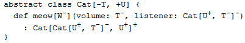

类型化参数能实现编写泛型类和特质。Scala中的泛型实例都应该写明具体类型（如：Set[Int]，Set[Int]），而不像Java中可以不带泛型类型。
函数式的队列是不可变的，添加元素操作会返回一个新的队列。三个基本方法：
head返回队列的第一个元素。
tail返回第一个元素以外的队列。
append返回在尾部添加指定元素的列队。
理想情况下，希望三种基本操作都可以在常量时间中完成。
一个实现方案是以List作为功能表达类型，可以用现成的head和tail方法。append方法调用连接操作：
class SlowAppendQueue[T](elems: List[T]) { // Not efficient
def head = elems.head
def tail = new SlowAppendQueue(elems.tail)
def append(x: T) = new SlowAppendQueue(elems ::: List(x))
}
但这样append操作的时间会按元素的数量而增加，那换一种思路，把列表倒过来排序，这样会让原来最后加进来的元素出现在列表的最前面：
class SlowHeadQueue[T](smele: List[T]) { // Not efficient
// smele is elems reversed
def head = smele.last
def tail = new SlowHeadQueue(smele.init)
def append(x: T) = new SlowHeadQueue(x :: smele)
}
现在表现也倒过来了：append操作时间为常量，但head和tail耗时与元素数量成正比了。
试一下结合两种列表的方案：
leading放前面一半；trailing放后一半反向排的元素。这样全部内容就是`leading :，这样常量时间就可以完成。但这样前一半的leading就不放进内容了，所以在对空的leading进行第一次head或tail操作前都要把trailing反转并复制给leading。这个操作被定义为mirror`。
虽然mirror操作与队列长度成正比，但是这只发生在leading为空时才会被调用。因为如果leading不为空它将直接返回。
class Queue[T](
private val leading: List[T],
private val trailing: List[T]
) {
private def mirror =
if (leading.isEmpty)
new Queue(trailing.reverse, Nil)
else
this
def head = mirror.leading.head
def tail = {
val q = mirror
new Queue(q.leading.tail, q.trailing)
}
def append(x: T) =
new Queue(leading, x :: trailing)
}
前面的Queue实现暴露了太多实现细节，比如构造器的两个参数还有一个是反转的。
class Queue[T] private (
private val leading: List[T],
private val trailing: List[T]
)
这样防止外部调用主构造器：
scala> new Queue(List(1, 2), List(3))
<console>:6: error: constructor Queue cannot be accessed in
object $iw
new Queue(List(1, 2), List(3))
^
客户代码只能调用辅助构造器：
def this() = this(Nil, Nil)
改良一下，让它可以带上初始队列元素列表：
def this(elems: T*) = this(elems.toList, Nil)
其中的T*是重复参数标记，在前面“函数与闭包”一章中已经介绍。
还有一种让客户代码构造的方法是在类定义同一个文件内建立伴生类的工厂方法：
object Queue {
// constructs a queue with initial elements `xs'
def apply[T](xs: T*) = new Queue[T](xs.toList, Nil)
}
除了私有构造器和私有成员，还可以直接隐藏掉类本身，只提供暴露类公共接口的特质：
trait Queue[T] {
def head: T
def tail: Queue[T]
def append(x: T): Queue[T]
}
object Queue {
def apply[T](xs: T*): Queue[T] =
new QueueImpl[T](xs.toList, Nil)
private class QueueImpl[T](
private val leading: List[T],
private val trailing: List[T]
) extends Queue[T] {
def mirror =
if (leading.isEmpty)
new QueueImpl(trailing.reverse, Nil)
else
this
def head: T = mirror.leading.head
def tail: QueueImpl[T] = {
val q = mirror
new QueueImpl(q.leading.tail, q.trailing)
}
def append(x: T) =
new QueueImpl(leading, x :: trailing)
}
}
上面的Queue物质创建实例时一定要加类型参数：
scala> def doesNotCompile(q: Queue) {}
<console>:5: error: trait Queue takes type parameters
def doesNotCompile(q: Queue) {}
scala> def doesCompile(q: Queue[AnyRef]) {}
doesCompile: (Queue[AnyRef])Unit
Scala的泛型在默认情况下是非协变的（nonvariant），即Queue[String]不是Queue[AnyRef]的子类。但还是可以设置为协变（covariant）的。
用+表明子类型化协变，即Queue[String]是Queue[AnyRef]的子类：
trait Queue[+T] { ... }
用-表示逆变（contravariant）子类型化，如果T类型是S的子类型，将隐含Queue[S]是Queue[T]的子类型：
trait Queue[-T] { ... }
在纯函数式中，许多类型都是自然协变的。然而一旦引入了可变数据，情况就改变了。假设一个简单的只能读写一个元素的单元格（Cell）类型：
class Cell[T](init: T) {
private[this] var current = init
def get = current
def set(x: T) { current = x }
}
上面的Cell是非协变的。我们现成假设它是协变的，声明为Cell[+T]并发送给Scala编译器。于是我们可以构建如下存在问题的语句序列：
val c1 = new Cell[String]("abc")
建立String放在c1中，OK。
val c2: Cell[Any] = c1
c2类型是Cell[Any]，也OK。
c2.set(1)
c2里存数字，也OK。
val s: String = c1.get
c1里的字符串，赋给字符串也OK。
上面四行都OK，但是看看这四行放在一起，就出问题了：
val c1 = new Cell[String]("abc")
val c2: Cell[Any] = c1
c2.set(1)
val s: String = c1.get
Cell.scala:7: error: covariant type T occurs in
contravariant position in type T of value x
def set(x: T) = current = x
^
这四行代码是要把整数1赋值给字符串s，这样破坏了类型声明。问题出在第二行，Cell[Any]和Cell[String]的类型的协变引起了错误。
以前面的Cell类为例与Java中的数组比较，Java中的数组是协变的：
// this is Java
String[] a1 = { "abc" };
Object[] a2 = a1;
a2[0] = new Integer(17);
String s = a1[0];
虽然可以通过编译，但是运行时第四行会报错。Java运行时保存了数组元素类型，在更新时对新元素进行合法性校验。类型错误时抛出ArrayStore：
Exception in thread "main" java.lang.ArrayStoreException:
java.lang.Integer
at JavaArrays.main(JavaArrays.java:8)
这样看起来好像即没有用又浪费性能。按James Gosling的说法是希望有一个通用处理数组的简单方法，如需要排序所有元素时：
void sort(Object[] a, Comparator cmp) { ... }
这样确保任意参数类型的数组都可以传入排序方法。当然后来Java有了泛型以后数组的协变不再有用了，为了向以前老版本兼容才留着。
Scala中数组是不可协变的：
scala> val a1 = Array("abc")
a1: Array[java.lang.String] = Array(abc)
scala> val a2: Array[Any] = a1
<console>:5: error: type mismatch;
found : Array[java.lang.String]
required: Array[Any]
val a2: Array[Any] = a1
^
但有时还是要数组能泛型手段与Java遗留方法进行交互。所以Scala允许把T类型的数组造型为任意T的超类的数组：
scala> val a2: Array[Object] =
| a1.asInstanceOf[Array[Object]]
a2: Array[java.lang.Object] = Array(abc)
再看几个不合适的协变例子：
把前面的队列改成协变的，然后创建指定元素类型为Int的队列。并重载append方法使其在添加前先输出它参数的平方根：
class StrangeIntQueue extends Queue[Int] {
override def append(x: Int) = {
println(Math.sqrt(x))
super.append(x)
}
}
假设上面的代码是协变的，对应以下的调用：
val x: Queue[Any] = new StrangeIntQueue
x.append("abc")
上面的因为协变所以第一行是有效的，但第二行就有问题了……对字符串求平方根……
在更加广泛的情况下，只要把泛型作为方法参数类型，包含它的类或特质就有可能不能与这个类型参数一直协变，对于队列来说，append方法违反了以下情况：
class Queue[+T] {
def append(x: T) =
...
}
所以编译器会报错：
Queues.scala:11: error: covariant type T occurs in
contravariant position in type T of value x
def append(x: T) =
^
不要对可重新赋值的字段使用+的协变参数类型。如var x:T在Scala里被看作自带getter方法def x:T、def x_= (y:T)，所以将不是协变的。
深入讲述一些概念前，首选，我们把类和物质都简单称为“类”。然后对于这些类可能会用到类型参数的地方被分为正、负、中立。编译器检查类的类型参数的每一个用法。
+的类型参数只能被用在正的位置上，-的类型参数只能用在负的位置上。没有变化型注解的类型可以用于任何位置，所以它是唯一能被用在类结构体的中性位置上的类型参数。
编译器对位置分类是从类型声明开始进入更深的内嵌层。处于声明类最顶层被划为正的位置。默认情况下内层位置的分类会和外层一致。
但总有例外：方法值参数位置是方法外部的位置的翻转类别，这里正位置传为负，负转为正，而中性位置仍然保持中性。
除了方法值参数位置外，方法的类型参数的当前类别也会被翻转。而类型参数的位置，如C[Arg]中的Arg也有可以被翻转，这取决于对应类型参数的变化型：
如果C的类型参数标了+号，那么类别不变；如果标了-号，则当前类别被翻转；如果C的类型参数没有变化型注解，那么当前类型将改为中性。
下面的例子比较生编硬造，下面类型定义中的若干位置变化弄被标了正+或-负：
类型参数W与两个值参数volume和listener的位置都是负的。

注意meow的结果类型，第一个Cat[U, T]参数的位置是负的。因为Cat的第一个类型参数[T]被标了-。这个参数中的类型U重新转为正的位置（两次翻转），而参数中的类型T仍然是负位置。
总的来说：人脑想跟上变化型位置的变化是很困难的，所以Scala编译器自动来完成这项工作。计算机变化型过程中，编译器检查每个类型参数是否仅用于分类正确的位置上。
就上面的例子来说，T仅用在负位置上，而U仅用于正的位置上。所以这个Cat类是正确的。
在之前的“可选方案：私有类”这一节中展示的是没有办法协变的实现Queue[T]。因为类型T作为参数出现在append方法中，而这个位置是负的。
所幸有一个办法：可能通过把append变为金矿以使其泛型化并使用它的类型参数的下界：
class Queue[+T] (private val leading: List[T],
private val trailing: List[T] ) {
def append[U >: T](x: U) =
new Queue[U](leading, x :: trailing) // ...
}
append方法指定的类型参数U，并通过语法U >: T定义了T为U的下界，即：U必须是T的超类。返回类型也成了Queue[U]。
要注意对于同一个类来说，即是超类也是子类。所以T是U下界，用T传入也是可以的。
例子：对于Fruit和两个子类Orange和Apple，可以把Orange对象传入Queue[Apple]而返回Queue[Fruit]。
从技术角度来看，这里的情况发生了下界的翻转：类型参数U处于负位置（1次翻转），面下界>: T处于正的位置（两次翻转）。
前面所有的例子不是协变的就是非协变的。还有一些情况下会有逆变：
trait OutputChannel[-T] {
def write(x: T)
}
举例来说：这种情况下AnyRef作为String的子类型。如：把一个OutputChannel[AnyRef]赋给OutputChannel[String]是安全的，反过来把一个OutputChannel[String]赋给OutputChannel[AnyRef]却是不安全的。
当然这要有前提：AnyRef要支持String在这这里会用到的操作。
Scala函数物质中协变与逆变混在一起用的情况会比较多。对于S => T类型的函数会定义Function[S, T]，这时对参数A逆变而对结果B协变就是一种有用的策略：
trait Function1[-S, +T] {
def apply(x: S): T
}
应用的例子：
父类出版物的构造函数有一个标题参数，子类书的构造函数会调用父类的构造函数。
class Publication(val title: String) class Book(title: String) extends Publication(title)
单例对象Library定义了书的集，以及打印书单的方法printBookList的唯一参数是以Book => AnyRef类型的方法为参数。
object Library {
val books: Set[Book] =
Set(
new Book("Programming in Scala"),
new Book("Walden")
)
def printBookList(info: Book => AnyRef) {
for (book <- books) println(info(book))
}
}
单例对象Customer定义了方法getTitle根据出版物取得标题。最后一行调用Library的打印书单方法：
object Customer extends Application {
def getTitle(p: Publication): String = p.title
Library.printBookList(getTitle)
}
printBookList中的println方法会用到toString，这对所有String及AnyRef子类都有用，这里用到了函数结果类型的协变。
再来看printBookList的参数：指定的类型是Book => AnyRef，但实际调用时给的时Publication => String。参数是父类（Book的父类Publication）而结果是子类（AnyRef的子类String）。
之前的Queue类待改进内容：当leading列表为空时如果重复调用head，那么mirror操作会重复地把trailing复制到leading列表。
改动：
leading和trailing都是可变变量，mirror操作在当前列表上产生副作用而不是返回新的队列。由于它们都是对外不可见的私有变量，所以Queue还是算纯函数对象。
class Queue[+T] private (
private[this] var leading: List[T],
private[this] var trailing: List[T]
) {
private def mirror() =
if (leading.isEmpty) {
while (!trailing.isEmpty) {
leading = trailing.head :: leading
trailing = trailing.tail
}
}
def head: T = {
mirror()
leading.head
}
def tail: Queue[T] = {
mirror()
new Queue(leading.tail, trailing)
}
def append[U >: T](x: U) =
new Queue[U](leading, x :: trailing)
}
在两个可变私有成员变量的情况下Queue还可以使用协变。因为对于对象的私有值访问来说不可能有比定义的对象类型更弱的静态类型对象引用。
所以Scala的类型变化检查对于对象私有成员，在遇到带有+或-的类型参数只出现在具有相同变化型分类的位置上时，会被忽略。
所以如果去掉private修饰符的[this]限定会编译不过：
Queues.scala:1: error: covariant type T occurs in
contravariant position in type List[T] of parameter of
setter leading_=
class Queue[+T] private (private var leading: List[T],
^
Queues.scala:1: error: covariant type T occurs in
contravariant position in type List[T] of parameter of
setter trailing_=
private var trailing: List[T]) {
^
上面分别报错的原因是：协变类型T出现在setter函数leading_=参数类型List[T]的逆变位置上；协变类型T出现在setter函数trailing_=参数类型List[T]的逆变位置上。
之前在“使用列表”章的第一节“列表字面量”中实现一个归并排序的方法。它的第一个参数是比较函数，第二个柯里化的参数是要排序的列表。对这个函数的另一种组织方法大概 就是把列表类型混入到ordered特质中。
通过把Ordered特质混入到类中并实现抽象的比较方法Compare，就可以对实例进行比较：
class Person(val firstName: String, val lastName: String)
extends Ordered[Person] {
def compare(that: Person) = {
val lastNameComparison =
lastName.compareToIgnoreCase(that.lastName)
if (lastNameComparison != 0)
lastNameComparison
else
firstName.compareToIgnoreCase(that.firstName)
}
override def toString = firstName +" "+ lastName
}
scala> val robert = new Person("Robert", "Jones")
robert: Person = Robert Jones
scala> val sally = new Person("Sally", "Smith")
sally: Person = Sally Smith
scala> robert < sally
res0: Boolean = true
为了让列表类型混入到Ordered中，需要使用上界，符号<:。
T <: Ordered[T]表明类型必须是Ordered的子类型。比如Person，因为Person混入了Ordered特质：
def orderedMergeSort[T <: Ordered[T]](xs: List[T]): List[T] = {
def merge(xs: List[T], ys: List[T]): List[T] =
(xs, ys) match {
case (Nil, _) => ys
case (_, Nil) => xs
case (x :: xs1, y :: ys1) =>
if (x < y) x :: merge(xs1, ys)
else y :: merge(xs, ys1)
}
val n = xs.length / 2
if (n == 0) xs
else {
val (ys, zs) = xs splitAt n
merge(orderedMergeSort(ys), orderedMergeSort(zs))
}
}
使用：
scala> val people = List(
| new Person("Larry", "Wall"),
| new Person("Anders", "Hejlsberg"),
| new Person("Guido", "van Rossum"),
| new Person("Alan", "Kay"),
| new Person("Yukihiro", "Matsumoto")
| )
people: List[Person] = List(Larry Wall, Anders Hejlsberg,
Guido van Rossum, Alan Kay, Yukihiro Matsumoto)
scala> val sortedPeople = orderedMergeSort(people)
sortedPeople: List[Person] = List(Anders Hejlsberg, Alan Kay,
Yukihiro Matsumoto, Guido van Rossum, Larry Wall)
以上的解决方案还是有限制，比如不能适应整数列表。因为Int不是Ordered[Int]的子类：
scala> val wontCompile = orderedMergeSort(List(3, 2, 1))
<console>:5: error: inferred type arguments [Int] do
not conform to method orderedMergeSort's type
parameter bounds [T <: Ordered[T]]
val wontCompile = orderedMergeSort(List(3, 2, 1))
^
在以后的“隐式类型转换和参数”的“视界”一节中介绍通过采用隐式参数与检查约束来实现更加通用的方案。
Scala中不仅可以指定方法为抽象，还可以声明字段甚至抽象类型为类和特质的成员。
在特质中分别对类型（T）、方法（transform）、val（initial）、var（current）的抽象声明：
trait Abstract {
type T
def transform(x: T): T
val initial: T
var current: T
}
实现：
class Concrete extends Abstract {
type T = String
def transform(x: String) = x + x
val initial = "hi"
var current = initial
}
（略）
val是不可变的，抽象的val指定了类型与变量名，不指定值：
val initial: String
实现时指定值：
val initial = "hi"
如果不知道类中定义的确切内容，但是确定对于每个实例来说值都是不可变的。在这样的情况下可以使用抽象的val声明，格式类似于无参数方法声明：
def initial: String
客户代码将使用统一的obj.initial方法引用val及方法。如果initial是抽象val，那么客户就可以保证每次引用都将得到同样的值。如果initial是抽象方法那就无法保证，因为在不同的实现中initial可以被实现为每次调用都返回不同的值。
换名话说抽象的val限制了合法实现的方式：任何实现都必须是val类型的定义不可以是var。另一方面，抽象方法声明可以被实现为具体的方法定义或具体的val定义。
所以在下面的代码中，Apple是合法的子类面BadApple不是：
abstract class Fruit {
val v: String // `v' for value
def m: String // `m' for method
}
abstract class Apple extends Fruit {
val v: String
val m: String // OK to override a `def' with a `val'
}
abstract class BadApple extends Fruit {
def v: String // ERROR: cannot override a `val' with a `def'
def m: String
}
在特质里使用，只声明类型与名称，没有初始值：
trait AbstractTime {
var hour: Int
var minute: Int
}
也会有自动扩展的getter与setter方法，相当于：
trait AbstractTime {
def hour: Int // getter for `hour'
def hour_=(x: Int) // setter for `hour'
def minute: Int // getter for `minute'
def minute_=(x: Int) // setter for `minute'
}
结合特质来使用，抽象val可以让子类扩展提供父类没有的参数与细节。因为特质缺省能用来传递参数的构造器。
拿前面的实数类来作例子，以下特质：
trait RationalTrait {
val numerArg: Int
val denomArg: Int
}
为了实例化这个特质，先要实现val。在这里我们要用到新的new语法结构：
new RationalTrait {
val numerArg = 1
val denomArg = 2
}
上面的代码会产混入了物质的匿名类实例，类似于new Rational(1, 2)。当然区别还是有的：
new Rational(expr1, expr2)
上面的两个表达式会在类初始化前计算，而相反的：
new RationalTrait {
val numerArg = expr1
val denomArg = expr2
}
上面的两个表达式会作为匿名类初始化的一部分计算。而匿名类初始化在RationalTrait之后执行，所以numerArg和denomArg的值在RationalTrait初始化期间还没有准备好，都是Int类型的默认值0。
所以对下面的代码来说，这会成为一个问题，因为其中定义了经过约分后的分子与分母：
trait RationalTrait {
val numerArg: Int
val denomArg: Int
require(denomArg != 0)
private val g = gcd(numerArg, denomArg)
val numer = numerArg / g
val denom = denomArg / g
private def gcd(a: Int, b: Int): Int =
if (b == 0) a else gcd(b, a % b)
override def toString = numer +"/"+ denom
}
如果尝试使用某种分子和分母的表达式面不是简单的字面量实例化这个特质，会引起以下错误：
scala> val x = 2
x: Int = 2
scala> new RationalTrait {
| val numerArg = 1 * x
| val denomArg = 2 * x
| }
java.lang.IllegalArgumentException: requirement failed
at scala.Predef$.require(Predef.scala:107)
at RationalTrait$class.$init$(<console>:7)
at $anon$1.<init>(<console>:7)
....
解决方案有两个，分别是预初始化字段和懒加载val。
给字段定义加上花括号，放在超类的构造器之前：
scala> new {
| val numerArg = 1 * x
| val denomArg = 2 * x
| } with RationalTrait
res15: java.lang.Object with RationalTrait = 1/2
不仅匿名类可以用预加载，有名称的类和对象也可以。
注意要放在关键字extends后面：
object twoThirds extends {
val numerArg = 2
val denomArg = 3
} with RationalTrait